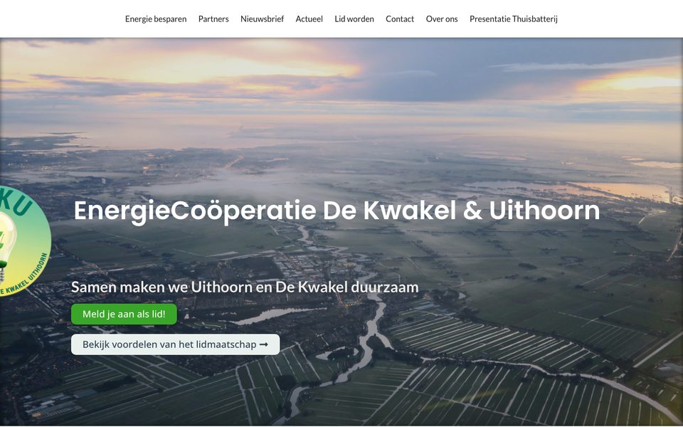
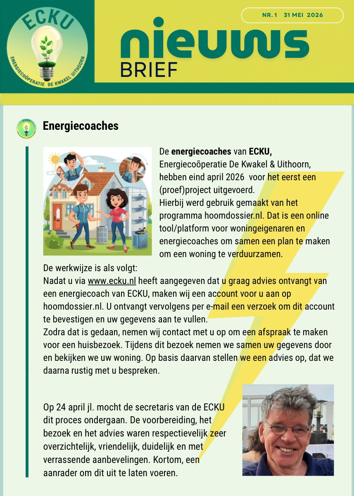
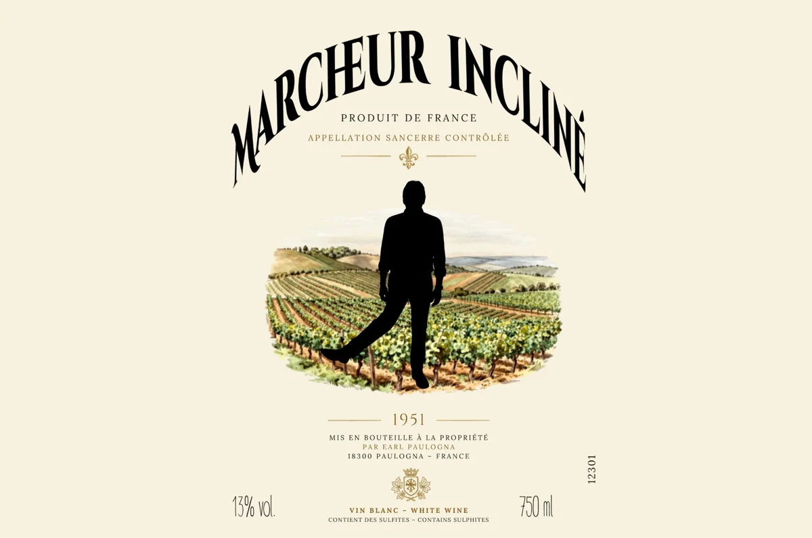

Websites en online
Een kleine website, een landingspagina of een opfrisbeurt van wat je al hebt. Ook hulp met WordPress, Elementor, teksten en beeld.
Bekijk mogelijkheden voor websites en onlineHulp bij websites, video, fotobewerking, logo’s, social media, drukwerk en presentaties.
Persoonlijk, betaalbaar (omdat ik het leuk vind om te doen) en zonder ingewikkeld offertetraject.
Voor particulieren, kleine bedrijven, verenigingen en lokale initiatieven.

Ben je op zoek naar een mooie, eenvoudige website, een video voor een speciale gelegenheid, fotobewerking of misschien wel een logo voor jouw startende bedrijfje? Dan is MooiGemaakt misschien wel iets voor jou.
Mijn naam is Ton Worm en ik maak websites, video’s, foto’s, logo’s en andere visuele uitingen, omdat ik het leuk vind om ideeën zichtbaar te maken. Ik werk graag met kleine ondernemers, particulieren, verenigingen en lokale initiatieven.
Misschien heb je een goed idee, maar geen tijd, kennis of budget om het zelf netjes uit te werken. Een reclamebureau voelt te groot en een uitgebreid offertetraject is voor jouw vraag helemaal niet nodig. Daar is MooiGemaakt voor.
MooiGemaakt is bewust klein. Je hebt contact met één persoon: degene die luistert, meedenkt en het werk ook maakt. Je vertelt wat je voor ogen hebt, ik denk met je mee en we spreken helder af wat ik voor je maak.
Lees meer over mij en mijn ervaringEén foto bijwerken of een hele website laten maken: het kan allebei. Dit zijn de zes gebieden waarin ik je kan helpen.
Een kleine website, een landingspagina of een opfrisbeurt van wat je al hebt. Ook hulp met WordPress, Elementor, teksten en beeld.
Bekijk mogelijkheden voor websites en onlineFoto’s verbeteren, uitsnijden of geschikt maken voor web en social media. Ook collages, galerijen en het opknappen van oudere foto’s.
Bekijk mogelijkheden voor foto en beeldbewerkingKorte video’s voor je website of social media, gemonteerd uit nieuw of bestaand beeld. Met titels, muziek en ondertiteling waar dat past.
Bekijk mogelijkheden voor videoBerichten, templates en banners die bij jouw uitstraling passen. Voor een actie, evenement, nieuwtje of aanbieding.
Bekijk mogelijkheden voor social media en advertentiesVan logo en flyer tot poster, uitnodiging of menukaart. Netjes opgemaakt en drukklaar aangeleverd.
Bekijk mogelijkheden voor vormgeving en drukwerkPresentaties in PowerPoint of Keynote, diavoorstellingen en digitale albums. Voor een bijeenkomst, jubileum, afscheid of feest.
Bekijk mogelijkheden voor presentaties en herinneringenStuur een bericht met wat je wilt maken, voor wie het is en wanneer je het nodig hebt.
Ik denk mee over de mogelijkheden, stel vragen en maak duidelijke afspraken over aanpak en oplevering.
Na afloop bepaal je wat het werk je waard is. Dat kan geld zijn, een wederdienst of iets anders dat we vooraf samen bespreken.
Goed om te weten: Voor grotere opdrachten, spoedwerk, externe kosten of projecten met veel uren maken we vooraf een aparte, heldere afspraak.
Je hebt rechtstreeks contact met degene die het werk ook echt maakt.
Een goed gesprek en een heldere afspraak zijn meestal genoeg.
Website, beeld, video en drukwerk sluiten op elkaar aan.
Bij jouw situatie en bij de waarde van het resultaat. Daar ben ik vooraf open over.
Een greep uit werk dat ik eerder heb gemaakt. Meer zie je op de pagina Voorbeelden.

Een rustige website van een paar pagina’s waarop bezoekers snel zien wat deze energiecoöperatie doet en voor wie het interessant kan zijn. Deze website wordt door mij bijgehouden en ik ben bezig een nieuwe te maken.
Een staande video van ongeveer een halve minuut, gemonteerd met beelden van internet en een foto van de zzp’er. Deze beginnende vertaalster wilde snel een korte promovideo. Ik heb ze zowel voor Facebook als voor Instagram gemaakt.

Eén herkenbaar ontwerp, uitgewerkt om leden of belangstellenden digitaal op de hoogte te houden.

Dit wijnetiket heb ik gemaakt ter gelegenheid van een bijzondere verjaardag van een vriend. Een foto van de vriend is als silhouet verwerkt in het etiket.
Ter gelegenheid van een thema-avond over ‘Energie delen’ heb ik deze PowerPoint in de huisstijl gemaakt. De aangeleverde informatie heb ik verwerkt tot een zo duidelijk mogelijke presentatie.
Voor een bevriende Turkse familie heb ik een nieuwjaarswens gemaakt in de vorm van een video. Deze is in het Turks. Op aanvraag kon deze ook in een andere taal worden geleverd en met een andere afzender.
Ik heb intensief en met veel plezier met Ton samengewerkt binnen het bestuur van onze lokale politieke partij, waar hij verantwoordelijk was voor het webdesign/onderhoud en de communicatie. Ton heeft deze rol werkelijk voortreffelijk ingevuld.
Hij valt op door zijn betrouwbaarheid en komt gemaakte afspraken altijd na. Bij de ontwikkeling van ons verkiezingsmateriaal – zoals posters, banners en folders – heeft hij een cruciale artistieke én inhoudelijke inbreng gehad. Daarnaast beschikt Ton over sterke redactionele en communicatieve vaardigheden: hij is een kundig interviewer en weet interviews feilloos en aantrekkelijk te verwoorden voor publicaties in de lokale pers.
Tevens heeft hij het nieuwe logo van onze partij ontworpen, dat wij inmiddels vol trots gebruiken. Kortom: Ton is een veelzijdige, creatieve en betrouwbare professional. Ik kan hem dan ook van harte aanbevelen voor een breed scala aan activiteiten en projecten.
Of het nu gaat om één foto, een korte video, een kleine website of een complete presentatie: vertel gerust wat je voor ogen hebt.